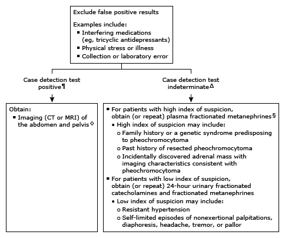

Initial evaluation of high fractionated metanephrines in adults*

This algorithm is intended to be used in conjunction with additional UpToDate content on pheochromocytoma.
CT: computed tomography; MRI: magnetic resonance imaging. * Interpretation of a specific abnormal test result should be based upon the method used to obtain the sample and on the reference range reported with that result. If urinary catecholamines were not ordered with the initial urinary assessment, we advise adding on the test or repeating a 24-hour urinary collection for fractionated metanephrines, catecholamines, and creatinine. ¶ For 24-hour urinary metanephrines, a positive result is normetanephrine >900 mcg/24 hours or metanephrine >400 mcg/24 hours. (For urinary catecholamines, a positive result is a twofold elevation above the upper limit of normal). For plasma metanephrines drawn supine from an indwelling catheter, a positive result is metanephrine >0.3 nmol/L (>0.059 pg/mL) and/or normetanephrine >0.66 nmol/L (>0.120 pg/mL). For plasma metanephrines drawn in a seated patient, a positive result is metanephrine >0.5 nmol/L (>0.099 pg/mL) and/or normetanephrine >0.9 nmol/L (>0.165 pg/mL). Δ An indeterminate result is above the upper limit of the reference interval for the laboratory but below the threshold for positive case detection. ◊ Additional imaging may be required depending on initial results. § If the initial sample was a seated plasma fractionated metanephrines, it is reasonable to obtain a supine sample.